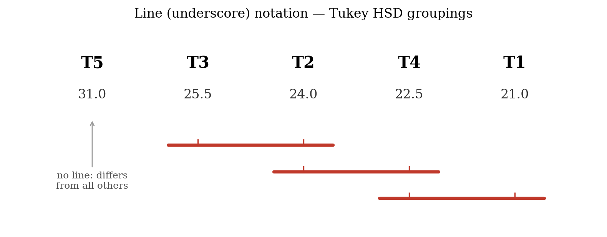

19 Multiple comparison tests
ANOVA is an omnibus test. An omnibus test, as the general name suggests, refers to an overall or global test. It is implemented on an overall hypothesis that tends to find whether there is any significant difference between the treatment means (in the case of ANOVA) or not.
ANOVA does not tell us which treatment pairs are different. More clearly, on rejecting the null hypothesis in ANOVA, we conclude that at least a pair of treatment means are different, but it does not give any idea about which specific treatments are different. In order to identify which treatment means are significantly different, we need to employ multiple comparison tests, also known as post-hoc tests.
A significant omnibus F test in the ANOVA procedure is a prerequisite before conducting post-hoc comparisons; otherwise, those comparisons are not required. There are several methods for performing post-hoc tests. In this chapter, we discuss the three that are most widely used in agricultural research:
Fisher’s LSD test (Least Significant Difference test)
Duncan’s Multiple Range Test (DMRT)
Tukey’s test (Honestly Significant Difference test)
19.1 Why do we need a post-hoc test?
A Type I error occurs when the null hypothesis \(H_0\) is statistically rejected even though it is actually true (a false positive), whereas a Type II error refers to failing to reject \(H_0\) when it is actually false (a false negative). In a post-hoc test, we compare each of the treatment pairs individually. For example, consider a situation in which three treatments A, B, and C are compared. They may form the following three pairs: A versus B, A versus C, and B versus C. The set of pairwise comparisons for a given experiment is called a family. The Type I error rate for the whole set of comparisons taken together is called the family-wise error rate (FWER) (Lee and Lee 2018).
For example, if one performs a pairwise test between two groups A and B at the 5% level of significance (\(\alpha\)) and observes that they are not significantly different, then the chance that a correct decision is made (not committing a Type I error) is 95%. If a second pairwise test between groups B and C is also carried out and gives a non-significant result, then the probability of making a correct decision on both the A–B and B–C comparisons is \(0.95 \times 0.95 = 0.9025\), or 90.25%. Consequently, the actual Type I error rate for the family is \(1 - 0.9025 = 0.0975\), not 0.05. If the comparison between groups A and C is also non-significant, the probability of correctly declaring non-significance for all three pairs is \(0.95 \times 0.95 \times 0.95 = 0.857\), and the actual family-wise Type I error rate is \(1 - 0.857 = 0.143\), which is more than 14%. So the chance of a Type I error increases sharply when several treatment pairs are tested together. Multiple comparison tests are devised in such a way that a correction is incorporated to control this inflation in \(\alpha\), so that the actual level of significance remains at the prescribed rate (in our case 0.05).
\[\text{Inflated } \alpha = 1 - \left( 1 - \alpha \right)^{N} \tag{19.1}\]
where \(N\) is the number of hypotheses (comparisons) tested. As Equation 19.1 shows, the inflation of the probability of a Type I error increases with the number of comparisons.
The number of possible pairwise comparisons among \(v\) treatments is \(\binom{v}{2} = \dfrac{v(v-1)}{2}\). For example, with 5 treatments there are \(\dfrac{5 \times 4}{2} = 10\) pairwise comparisons, and without any correction the family-wise error rate would rise to \(1 - (0.95)^{10} = 0.40\), or 40%.
19.2 Fisher’s LSD test
The first pairwise comparison technique was developed by Fisher in 1935 and is called the least significant difference (LSD) test. Fisher’s LSD procedure is a two-step testing procedure for pairwise comparisons of several treatment groups. In the first step, ANOVA is performed. If the null hypothesis can be rejected at the pre-specified level of significance, then in the second step all pairwise comparisons of treatment means are performed.
Steps in Fisher’s LSD test
ANOVA is performed, and if the null hypothesis is rejected, proceed to step 2. If the ANOVA does not show a significant effect, the analysis is not carried forward to pairwise comparisons.
An LSD (least significant difference) value is calculated. For each pair of treatments, if the absolute difference between the two treatment means is greater than the LSD value, we conclude that those treatment means are significantly different.
Among agricultural researchers in India, the term CD (Critical Difference) is used instead of LSD. Both terms mean the same thing and are used interchangeably.
19.2.1 LSD (Least Significant Difference)
Consider two treatments \(T_{i}\) and \(T_{j}\) with replications \(r_{i}\) and \(r_{j}\). Then the LSD (or CD) is given by
\[\text{LSD} = t_{\frac{\alpha}{2},\, edf} \cdot SE(d) \tag{19.2}\]
\[SE(d) = \sqrt{\text{MSE}\left( \frac{1}{r_{i}} + \frac{1}{r_{j}} \right)} \tag{19.3}\]
where MSE is the mean square error from the ANOVA, and \(t_{\frac{\alpha}{2},\, edf}\) is the critical value of the two-tailed Student’s t distribution at the \(\alpha\) level of significance and error degrees of freedom (\(edf\)).
If the replications are equal, \(r_{i} = r_{j} = r\), then
\[SE(d) = \sqrt{\text{MSE}\left( \frac{1}{r} + \frac{1}{r} \right)} = \sqrt{\text{MSE}\left( \frac{2}{r} \right)} = \sqrt{\frac{2\,\text{MSE}}{r}} \tag{19.4}\]
\[\text{LSD} = t_{\frac{\alpha}{2},\, edf} \cdot \sqrt{\frac{2\,\text{MSE}}{r}} \tag{19.5}\]
If the difference between the means of two treatments \(T_{i}\) and \(T_{j}\) is greater than the LSD, we say that \(T_{i}\) and \(T_{j}\) are significantly different at the specified level of significance \(\alpha\).
19.2.2 Logic behind the LSD test
Let \(\overline{T_{i}}\) and \(\overline{T_{j}}\) be the treatment means obtained from the experiment, and let \(\mu_{i}\) and \(\mu_{j}\) be the corresponding unknown population means. The null hypothesis for a pairwise comparison is
\(H_0\): \(\mu_{i} = \mu_{j}\), i.e. \(\mu_{i} - \mu_{j} = 0\).
A t-test can be used to test this hypothesis:
\[t = \frac{\overline{T_{i}} - \overline{T_{j}}}{SE(d)} \tag{19.6}\]
The \(100(1 - \alpha)\%\) confidence interval for the mean difference \(\overline{T_{i}} - \overline{T_{j}}\) is \(\left( \overline{T_{i}} - \overline{T_{j}} \right) \pm t_{\frac{\alpha}{2},\, edf}\, SE(d)\), which can be written as \(\left( \overline{T_{i}} - \overline{T_{j}} \right) \pm \text{LSD}\). So, if \(\left| \overline{T_{i}} - \overline{T_{j}} \right| > \text{LSD}\), the confidence interval does not include 0, and we reject the null hypothesis and conclude that the two treatment means are different, with \(100(1 - \alpha)\%\) confidence.
19.2.3 Advantages and disadvantages of LSD
The LSD test is also known as the protected Fisher’s LSD test. “Protected” means that the pairwise calculations are performed only when the null hypothesis has already been rejected by the ANOVA. This first step helps to control the false positive rate (Type I error) for the entire family of comparisons (Hayter 1986).
While the protected Fisher’s LSD test was the first post-hoc test ever developed, it does not correct for \(\alpha\) inflation as effectively as some other post-hoc tests. Fisher’s LSD procedure is known to preserve the experiment-wise Type I error rate at the nominal level only when the number of treatments is exactly three (Meier 2006). Nevertheless, the LSD is still the most commonly used post-hoc test in agricultural research. When the number of treatments is larger, it is advisable to also consider DMRT or Tukey’s test.
19.3 Duncan’s Multiple Range Test (DMRT)
When a comparison of all possible pairs of treatment means is required, we can use Duncan’s Multiple Range Test (DMRT), devised by Duncan in 1955. It is especially useful when the number of treatments to be compared is large, and it is very popular in the plant sciences. In this test, the standard error of a mean is multiplied by tabulated values (\(r_{p}\)) for different values of \(p\), where p is the number of ordered treatment means spanned by the comparison, including the two means being compared. For example, when comparing two adjacent means, p=2. If one mean lies between the two means being compared, then p=3. If two means lie between them, then p=4, and so on. The calculated critical value is then used to decide whether the difference between the two treatment means is significant. For given \(p\), the \(r_p\) values are obtained from DMRT tables, a table is provided in Chapter 24.
Unlike Fisher’s LSD, which uses the same critical difference for every pair of means, DMRT uses progressively larger critical values as p increases. Consequently, treatment means that are farther apart in the ordered list are compared using a larger critical value.
Steps in DMRT
Arrange the treatment means in descending order, along with their ranks (highest value is given rank 1 and so on).
Calculate the standard error of a mean as
\[SE(\overline{Y}) = \sqrt{\frac{\text{MSE}}{r}} \tag{19.7}\]
From the statistical tables of Duncan’s multiple ranges, note the \(r_{p}\) values for \(p = 2, 3, \ldots, v\) treatments, corresponding to the error degrees of freedom.
Calculate the shortest significant ranges (\(R_{p}\)), where
\[R_{p} = r_{p} \cdot SE(\overline{Y}) \tag{19.8}\]
Compare the difference between each pair of means with the \(R_{p}\) value corresponding to the number of steps \(p\) separating them in the ranked order. If the difference exceeds the corresponding \(R_{p}\), the two means are significantly different.
Present the results using a letter (or line) notation to indicate which treatments are on par and which are significantly different.
The critical value \(R_{p}\) in DMRT gradually increases as the means being compared are ranked further apart. This means the “protection level” of the test relaxes as the number of means spanned increases, making DMRT more powerful (more likely to declare a difference) than a test based on a single critical value like the LSD. It is, however, more liberal than Tukey’s test, so it may declare more pairs significant.
19.4 Tukey’s test
Tukey’s test, also called the honestly significant difference (HSD) test, was proposed by John Tukey. It is used for making all possible pairwise comparisons among treatment means while controlling the family-wise error rate at the chosen level \(\alpha\) for the entire set of comparisons. This is its key advantage over the LSD test, which controls only the error rate of each individual comparison.
Tukey’s test is based on the studentised range statistic \(q\). For equal replications, a single critical difference, called the honestly significant difference, is computed:
\[\text{HSD} = q_{\alpha,\, (v,\, edf)} \cdot \sqrt{\frac{\text{MSE}}{r}} \tag{19.9}\]
where \(q_{\alpha,\, (v,\, edf)}\) is the critical value of the studentised range distribution for \(v\) treatments and error degrees of freedom \(edf\), MSE is the error mean square from the ANOVA, and \(r\) is the number of replications. Any two treatment means whose absolute difference exceeds the HSD are declared significantly different. Tukey’s test is more conservative than the LSD and DMRT, meaning it is less likely to declare a difference significant, and it is recommended when all pairwise comparisons are of interest and strict control of the Type I error is desired.
19.5 A worked example
Example 19.1 A field experiment was conducted to compare the yield (in kg per plot) of five fertilizer treatments \(T_1\), \(T_2\), \(T_3\), \(T_4\), and \(T_5\), laid out in a completely randomized design with four replications (\(r = 4\)). The ANOVA gave a significant treatment effect (\(F\) significant at the 5% level), with an error mean square \(\text{MSE} = 0.5333\) and error degrees of freedom \(edf = 15\). The treatment means are given below. Identify which treatments differ from one another using the LSD, DMRT, and Tukey’s tests at the 5% level of significance.
| Treatment | \(T_1\) | \(T_2\) | \(T_3\) | \(T_4\) | \(T_5\) |
|---|---|---|---|---|---|
| Mean yield | 21.0 | 24.0 | 25.5 | 22.5 | 31.0 |
Solution
Since the ANOVA F test is significant, we may proceed to the post-hoc comparisons.
(a) Fisher’s LSD test.
The critical t value at \(\alpha/2 = 0.025\) and \(edf = 15\) is \(t_{0.025,\,15} = 2.131\). Using Equation 19.5,
\[\text{LSD} = t_{0.025,\,15} \cdot \sqrt{\frac{2\,\text{MSE}}{r}} = 2.131 \times \sqrt{\frac{2 \times 0.5333}{4}} = 2.131 \times 0.5164 = 1.10\]
Any two treatment means differing by more than 1.10 are significantly different.
(b) Duncan’s Multiple Range Test.
For DMRT first, arrange the means in descending order:
| Rank | 1 | 2 | 3 | 4 | 5 |
|---|---|---|---|---|---|
| Treatment | \(T_5\) | \(T_3\) | \(T_2\) | \(T_4\) | \(T_1\) |
| Mean | 31.0 | 25.5 | 24.0 | 22.5 | 21.0 |
The standard error of a mean, using Equation 19.7, is
\[SE(\overline{Y}) = \sqrt{\frac{\text{MSE}}{r}} = \sqrt{\frac{0.5333}{4}} = 0.3651\]
The Duncan’s range values \(r_{p}\) at the 5% level for \(edf = 15\), \(r_{p}\) can be obtained from DMRT table given in Chapter 24 and the shortest significant ranges \(R_{p} = r_{p} \cdot SE(\overline{Y})\) from Equation 19.8, are
| \(p\) (means apart) | 2 | 3 | 4 | 5 |
|---|---|---|---|---|
| \(r_{p}\) | 3.014 | 3.160 | 3.250 | 3.312 |
| \(R_{p}\) | 1.10 | 1.15 | 1.19 | 1.21 |
(c) Tukey’s HSD test. The studentised range value at the 5% level for \(v = 5\) treatments and \(edf = 15\) is \(q_{0.05,\,(5,15)} = 4.367\). Using Equation 19.9,
\[\text{HSD} = q_{0.05,\,(5,15)} \cdot \sqrt{\frac{\text{MSE}}{r}} = 4.367 \times 0.3651 = 1.59\]
Any two treatment means differing by more than 1.59 are significantly different.
The pairwise comparisons under the three tests are summarised in Table 19.1. For each pair, S denotes a significant difference and NS a non-significant one.
| Comparison | Mean difference | Steps apart (\(p\)) | LSD (1.10) | DMRT (\(R_p\)) used | DMRT | HSD (1.59) |
|---|---|---|---|---|---|---|
| (\(T_5 - T_3\)) | 5.5 | 2 | S | 1.10 | S | S |
| (\(T_5 - T_2\)) | 7.0 | 3 | S | 1.15 | S | S |
| (\(T_5 - T_4\)) | 8.5 | 4 | S | 1.19 | S | S |
| (\(T_5 - T_1\)) | 10.0 | 5 | S | 1.21 | S | S |
| (\(T_3 - T_2\)) | 1.5 | 2 | S | 1.10 | S | NS |
| (\(T_3 - T_4\)) | 3.0 | 3 | S | 1.15 | S | S |
| (\(T_3 - T_1\)) | 4.5 | 4 | S | 1.19 | S | S |
| (\(T_2 - T_4\)) | 1.5 | 2 | S | 1.10 | S | NS |
| (\(T_2 - T_1\)) | 3.0 | 3 | S | 1.15 | S | S |
| (\(T_4 - T_1\)) | 1.5 | 2 | S | 1.10 | S | NS |
Note: The “Steps apart \(p\)” column indicates the number of ordered treatment means spanned by the comparison (including the two means being compared). The corresponding shortest significant range \(R_p\) is selected from the DMRT table based on this value of (\(p\)). This makes it clear why different critical values are used for different comparisons.
Notice the important difference between the tests. The LSD and DMRT declare every pair significant, because even the smallest difference (1.5) exceeds their critical values. Tukey’s HSD, being more conservative, uses a larger critical value (1.59), so the three pairs that differ by only 1.5 (\(T_3 - T_2\), \(T_2 - T_4\), and \(T_4 - T_1\)) are judged not significant. This illustrates the general rule that Tukey’s test is stricter than the LSD and DMRT, and therefore detects fewer differences.
19.6 Letter grouping (display of results)
The results of a multiple comparison test are conventionally presented using a compact letter grouping (also called the alphabet notation). Treatments that are not significantly different from each other share at least one common letter, while treatments that do not share any letter are significantly different. This lets the reader see the whole pattern of significance at a glance, without reading the full table of pairwise comparisons. You can even use symbols to denote significance but usually alphabets are used because its easy and 26 letters are there.
The rule for assigning letters is as follows:
Arrange the treatment means in descending order.
Assign the letter a to the largest mean (This is not a stricter rule, but this convention is followed usually, you can even use any symbol instead of alphabets). Moving down the list, keep the same letter a for every following mean that is not significantly different from the largest one (i.e. whose difference from it is less than the critical value).
When a mean is reached that is significantly different from the first mean of the current letter, start a new letter (b) at that mean.
Repeat the process starting from this new mean, and continue with letters c, d, and so on. A treatment that is not significantly different from more than one group receives more than one letter (for example bc), showing that it belongs to both overlapping groups.
Let us apply this to the results in Example 19.1.
For the LSD and DMRT, every pair of treatments is significantly different, so no two treatments share a letter, and each receives its own letter:
| Treatment | Mean | Grouping |
|---|---|---|
| \(T_5\) | 31.0 | a |
| \(T_3\) | 25.5 | b |
| \(T_2\) | 24.0 | c |
| \(T_4\) | 22.5 | d |
| \(T_1\) | 21.0 | e |
For Tukey’s HSD, the pairs \(T_3 - T_2\), \(T_2 - T_4\), and \(T_4 - T_1\) are not significant, so those treatments share letters. Starting from the top: \(T_5\) differs from all others and gets a. \(T_3\) starts b; \(T_2\) is not different from \(T_3\), so it also gets b, but \(T_2\) is also not different from \(T_4\), so a new letter c begins at \(T_2\), giving it bc. \(T_4\) is not different from \(T_2\) (c) and not different from \(T_1\), so it takes cd. \(T_1\) is not different from \(T_4\), so it takes d.
| Treatment | Mean | Grouping |
|---|---|---|
| \(T_5\) | 31.0 | a |
| \(T_3\) | 25.5 | b |
| \(T_2\) | 24.0 | bc |
| \(T_4\) | 22.5 | cd |
| \(T_1\) | 21.0 | d |
Reading the Tukey grouping: \(T_5\) (a) stands alone as the highest-yielding treatment, significantly better than all others. \(T_3\) and \(T_2\) share the letter b, so they are on par. \(T_2\) and \(T_4\) share c, and \(T_4\) and \(T_1\) share d, so those neighbouring pairs are also on par. But \(T_3\) (b) and \(T_4\) (cd) share no letter, so they are significantly different, and likewise \(T_2\) (bc) and \(T_1\) (d) are significantly different. This overlapping pattern is exactly what the letter notation is designed to convey.
An older but equivalent way of displaying the same information is the line (or underscore) notation. The treatment means are first arranged in order, and each group of adjacent means that are not significantly different from one another is joined by a common line. When groups overlap, the lines are drawn at different levels, some above and some below the row of means, so that they do not collide. Two treatments joined (directly or through a chain) by a common line are on par, while two treatments with no connecting line between them are significantly different. For the Tukey results in Example 19.1, one line would join \(T_3\) and \(T_2\), a second line (at a different level) would join \(T_2\) and \(T_4\), and a third would join \(T_4\) and \(T_1\), while \(T_5\) has no line at all, since it differs significantly from every other treatment. This conveys exactly the same groupings as the letters a, b, bc, cd, and d. The letter notation is now more common in printed tables because it is easier to typeset, but the two notations carry identical meaning.

The letter grouping method is more common in modern statistical software (such as R, SAS, SPSS, GenStat, JMP and cloud platforms like RAISINS), whereas the line or underscore notation was frequently used in older agricultural statistics texts and research publications. Both methods are equivalent in interpretation.
19.7 Other multiple comparison tests
Besides the three tests discussed above, several other multiple comparison procedures exist, each designed for a particular situation. These include the Student-Newman-Keuls (SNK) test, the Bonferroni method, the Dunnett method (used when every treatment is compared only against a single control), and Scheffé’s test (used for testing general contrasts among means). A detailed treatment of these methods is beyond the scope of this book; the interested reader may refer to a specialised text on the design and analysis of experiments.
“The method of difference is the most potent of all methods in experimental inquiry.” - John Stuart Mill
19.8 Chapter Summary
Fill in the blanks
Answers are given at the end of the chapter.
ANOVA is an __________ test that determines whether there is an overall significant difference among treatment means.
ANOVA does not identify which specific treatment __________ are significantly different.
Tests used to identify specific differences among treatment means after a significant ANOVA are called __________ comparison tests.
Multiple comparison tests are also called __________ tests.
A significant omnibus __________ test is a prerequisite before conducting post-hoc comparisons.
Rejecting the null hypothesis in ANOVA indicates that at least one pair of treatment means is __________.
Rejecting a true null hypothesis is called a Type __________ error.
Failing to reject a false null hypothesis is called a Type __________ error.
The collection of all pairwise comparisons in an experiment is called a __________.
The probability of making at least one Type I error among a family of comparisons is called the __________ error rate.
The number of possible pairwise comparisons among \(v\) treatments is __________.
Fisher’s Least Significant Difference test is abbreviated as __________.
Fisher’s LSD test was developed by __________.
In India, LSD is commonly referred to as the __________ Difference or CD.
In Fisher’s LSD procedure, pairwise comparisons are performed only after the ANOVA is found to be __________.
Fisher’s LSD is therefore also called __________ Fisher’s LSD.
The LSD is calculated using the error mean square obtained from the __________.
The standard error of the difference between two treatment means depends on the __________ and the number of replications.
If the difference between two treatment means is greater than the LSD, the means are considered significantly __________.
Duncan’s Multiple Range Test is abbreviated as __________.
DMRT was developed by __________ in 1955.
In DMRT, treatment means are first arranged in __________ order.
In DMRT, \(p\) represents the number of ordered treatment means __________ by the comparison.
The critical values used in DMRT are denoted by __________.
The shortest significant range in DMRT is denoted by __________.
The shortest significant range is calculated as \(R_p=\) __________.
Unlike LSD, DMRT uses progressively __________ critical values as the number of means spanned increases.
Tukey’s test is also called the Honestly Significant __________ test.
Tukey’s HSD test was proposed by __________.
Tukey’s test is based on the __________ range statistic.
For equal replications, Tukey’s test uses a single critical value called the __________.
Tukey’s test controls the family-wise error rate for the __________ set of pairwise comparisons.
Compared with LSD and DMRT, Tukey’s test is more __________.
A treatment grouping in which treatments that are not significantly different share a common letter is called __________ grouping.
In letter notation, treatments that do not share any common letter are significantly __________.
The older method of displaying groups of treatment means using connecting lines is called __________ notation.
A treatment that belongs to two overlapping non-significant groups may receive __________ letters.
The Bonferroni method, Dunnett method, Scheffé’s test, and SNK test are examples of other __________ comparison procedures.
Dunnett’s test is particularly useful when each treatment is compared with a single __________.
Scheffé’s test is used for testing general __________ among means.
Short-answer questions
What is an omnibus test?
Why is ANOVA called an omnibus test?
Why are multiple comparison tests required after ANOVA?
When should post-hoc comparisons be conducted after ANOVA?
Explain Type I and Type II errors.
What is family-wise error rate?
Why does the probability of Type I error increase when several pairwise comparisons are performed?
Derive the expression for inflated \(\alpha\) when \(N\) independent comparisons are performed.
How many pairwise comparisons are possible among \(v\) treatments?
Explain Fisher’s LSD test.
State the steps involved in Fisher’s LSD test.
What is meant by protected Fisher’s LSD?
Why is LSD also called Critical Difference in agricultural research?
Explain the logic behind Fisher’s LSD test.
State the advantages and disadvantages of Fisher’s LSD test.
What is Duncan’s Multiple Range Test?
State the steps involved in DMRT.
What is meant by \(p\) in DMRT?
Explain the meaning of \(R_p\) in DMRT.
Why does the critical range increase as \(p\) increases in DMRT?
How does DMRT differ from LSD?
What is Tukey’s HSD test?
Explain the principle of Tukey’s test.
What is the studentised range statistic?
State the advantages of Tukey’s HSD test.
Compare LSD, DMRT, and Tukey’s HSD test.
Why is Tukey’s test considered more conservative than LSD and DMRT?
What is compact letter grouping?
Explain the rules for assigning letters to treatment means.
What does it mean when two treatments share a common letter?
What does it mean when two treatments do not share a common letter?
Explain overlapping letter groups using an example.
What is line or underscore notation?
Explain the relationship between letter grouping and line notation.
Explain the purpose of presenting treatment means using letters rather than a complete pairwise comparison table.
Name some multiple comparison procedures other than LSD, DMRT, and Tukey’s test.
When is Dunnett’s test particularly useful?
What is the purpose of the Bonferroni method?
What is the purpose of Scheffé’s test?
Explain why the choice of a multiple comparison test affects the conclusions of an experiment.
Numerical and conceptual questions
Answers are given at the end of the chapter.
Explain why a significant ANOVA result does not identify which treatment means differ.
For 5 treatments, calculate the total number of possible pairwise comparisons.
If each of 10 pairwise comparisons is performed at \(\alpha=0.05\) without correction, calculate the approximate family-wise Type I error rate using the formula given in the chapter.
An ANOVA gives a non-significant treatment effect. Should Fisher’s LSD, DMRT, or Tukey’s test be conducted? Give a reason.
An experiment has four treatments with equal replications. The MSE is 0.5333, \(r=4\), and \(edf=15\). Calculate the LSD at the 5% level using \(t_{0.025,15}=2.131\).
Two treatment means are 25.5 and 24.0, and the LSD is 1.10. Determine whether the two treatments differ significantly.
Two treatment means are 25.5 and 24.0, and Tukey’s HSD is 1.59. Determine whether the two treatments differ significantly.
Explain why a treatment difference of 1.5 is significant under LSD but not significant under Tukey’s HSD in the worked example.
Calculate the standard error of a treatment mean when MSE = 0.5333 and \(r=4\).
In a DMRT analysis, two means are separated by one intermediate mean. What value of \(p\) should be used?
In a DMRT analysis, two adjacent means are being compared. What value of \(p\) should be used?
If two treatment means are separated by two intermediate means, determine the appropriate \(p\) value.
Given \(SE(\overline{Y})=0.3651\) and \(r_p=3.160\), calculate \(R_p\).
In a DMRT analysis, a difference between two means is 1.20 and the corresponding \(R_p\) is 1.15. State the conclusion.
In a DMRT analysis, a difference between two means is 1.10 and the corresponding \(R_p\) is 1.15. State the conclusion.
Arrange the following treatment means in descending order for DMRT: 21.0, 31.0, 24.0, 25.5, and 22.5.
Explain why DMRT uses different critical ranges for different pairs of means.
For 5 treatments with \(MSE=0.5333\), \(r=4\), and \(q=4.367\), calculate Tukey’s HSD.
Using an HSD of 1.59, identify which of the following differences are significant: 5.5, 7.0, 8.5, 10.0, 1.5, 3.0.
In the worked example, explain why \(T_3\) and \(T_2\) share a letter under Tukey’s test.
Explain why \(T_2\) receives the grouping \(bc\) in the Tukey example.
Explain why \(T_4\) receives the grouping \(cd\) in the Tukey example.
Construct the compact letter grouping for the Tukey results in the worked example.
Construct the compact letter grouping for the LSD results in the worked example.
Explain why every treatment receives a different letter under LSD and DMRT in the worked example.
Important formulae
Number of pairwise comparisons among \(v\) treatments:
\[ N=\binom{v}{2}=\frac{v(v-1)}{2} \]
Inflated Type I error rate:
\[ \text{Inflated }\alpha=1-(1-\alpha)^N \]
Standard error of the difference between two treatment means:
\[ SE(d)=\sqrt{\text{MSE}\left(\frac{1}{r_i}+\frac{1}{r_j}\right)} \]
Fisher’s LSD:
\[ \text{LSD}=t_{\frac{\alpha}{2},\,edf}\cdot SE(d) \]
LSD for equal replications:
\[ \text{LSD}=t_{\frac{\alpha}{2},\,edf}\cdot\sqrt{\frac{2\text{MSE}}{r}} \]
Test statistic for pairwise comparison:
\[ t=\frac{\overline{T_i}-\overline{T_j}}{SE(d)} \]
Standard error of a treatment mean in DMRT:
\[ SE(\overline{Y})=\sqrt{\frac{\text{MSE}}{r}} \]
Shortest significant range in DMRT:
\[ R_p=r_p\cdot SE(\overline{Y}) \]
Tukey’s honestly significant difference:
\[ \text{HSD}=q_{\alpha,(v,edf)}\cdot\sqrt{\frac{\text{MSE}}{r}} \]
Quick revision
ANOVA → omnibus test for detecting an overall treatment effect.
Significant ANOVA → indicates that at least one pair of treatment means differs.
ANOVA alone → does not identify which specific treatment pairs differ.
Multiple comparison tests → used to identify specific differences among treatment means.
Post-hoc tests → should generally be conducted after a significant ANOVA.
Type I error → rejecting a true null hypothesis.
Type II error → failing to reject a false null hypothesis.
Family → complete set of pairwise comparisons in an experiment.
FWER → probability of making at least one Type I error within the family of comparisons.
Number of pairwise comparisons → \(v(v-1)/2\).
Fisher’s LSD → two-step procedure involving significant ANOVA followed by pairwise comparisons.
LSD → Least Significant Difference.
CD → Critical Difference; commonly used term for LSD in Indian agricultural research.
Protected LSD → pairwise comparisons are performed only after a significant ANOVA.
Decision under LSD → if \(|\overline{T_i}-\overline{T_j}|>\text{LSD}\), the means differ significantly.
Equal replications → \(\text{LSD}=t_{\alpha/2,edf}\sqrt{2\text{MSE}/r}\).
LSD is relatively liberal compared with Tukey’s test.
Fisher’s LSD controls experiment-wise Type I error effectively only when the number of treatments is exactly three, as discussed in the chapter.
DMRT → Duncan’s Multiple Range Test.
DMRT → useful when comparing many treatment means and widely used in plant sciences.
DMRT procedure → rank means, calculate standard error, obtain \(r_p\), calculate \(R_p\), and compare differences with the appropriate \(R_p\).
In DMRT, \(p\) → number of ordered treatment means spanned by the comparison, including the two means being compared.
Adjacent means → \(p=2\).
One mean between the two means → \(p=3\).
Two means between the two means → \(p=4\).
DMRT critical range → increases as \(p\) increases.
DMRT → generally more powerful and more liberal than Tukey’s test.
Tukey’s HSD → compares all possible pairs while controlling the family-wise error rate.
Tukey’s test → based on the studentised range statistic \(q\).
HSD → single critical difference for equal replications.
Decision under Tukey → if \(|\overline{T_i}-\overline{T_j}|>\text{HSD}\), the means differ significantly.
Tukey’s test → more conservative than LSD and DMRT.
More conservative test → less likely to declare a difference significant.
In the worked example → LSD = 1.10.
In the worked example → DMRT \(R_p\) values range from 1.10 to 1.21.
In the worked example → Tukey HSD = 1.59.
Under LSD and DMRT → all treatment pairs are significant.
Under Tukey → differences of 1.5 are not significant.
Tukey therefore identifies fewer significant differences than LSD and DMRT in the example.
Compact letter grouping → convenient presentation of multiple comparison results.
Same letter → treatments are not significantly different.
No common letter → treatments are significantly different.
A treatment can have more than one letter when it belongs to overlapping non-significant groups.
Letter grouping is also called alphabet notation.
Line or underscore notation → older method of presenting groups of means.
Letter and line notation → convey the same statistical information.
Dunnett’s test → useful when every treatment is compared with a single control.
Bonferroni method → adjusts significance for multiple comparisons.
Scheffé’s test → useful for general contrasts among means.
SNK → Student-Newman-Keuls multiple comparison procedure.
Answers to fill in the blanks
1. Omnibus 2. Pairs 3. Multiple 4. Post-hoc 5. F 6. Different 7. I 8. II 9. Family 10. Family-wise 11. \(\dfrac{v(v-1)}{2}\) 12. LSD 13. Fisher 14. Critical 15. Significant 16. Protected 17. ANOVA 18. MSE 19. Different 20. DMRT 21. Duncan 22. Descending 23. Spanned 24. \(r_p\) 25. \(R_p\) 26. \(r_p \cdot SE(\overline{Y})\) 27. Larger 28. Difference 29. John Tukey 30. Studentised 31. HSD 32. Entire 33. Conservative 34. Compact letter 35. Different 36. Line 37. Multiple 38. Multiple 39. Control 40. Contrasts
Solutions to numerical and conceptual questions
A significant ANOVA rejects the overall null hypothesis, showing that at least one pair of treatment means differs, but because it is an omnibus test it does not indicate which specific pair or pairs are responsible, so pairwise post-hoc tests are required.
Using Equation 19.1 context, the number of pairwise comparisons is \(\dfrac{v(v-1)}{2} = \dfrac{5 \times 4}{2} = 10\).
Using Equation 19.1, inflated \(\alpha = 1-(1-0.05)^{10} = 1-(0.95)^{10} = 0.40\), about 40%.
None of them should be conducted, since a non-significant ANOVA means there is no overall treatment effect, and post-hoc tests require a significant omnibus F test first.
Using Equation 19.5, \(\text{LSD} = 2.131 \times \sqrt{\dfrac{2 \times 0.5333}{4}} = 2.131 \times 0.5164 = 1.10\).
The difference is \(25.5-24.0 = 1.5\), which exceeds the LSD of 1.10, so the two treatments differ significantly.
The difference is \(25.5-24.0 = 1.5\), which is less than the HSD of 1.59, so the two treatments do not differ significantly.
The difference 1.5 exceeds the LSD (1.10) but not the HSD (1.59); Tukey’s test uses a larger critical value because it controls the family-wise error rate over all comparisons, so it is more conservative than the LSD.
Using Equation 19.7, \(SE(\overline{Y}) = \sqrt{\dfrac{0.5333}{4}} = 0.3651\).
When one mean lies between the two means being compared, \(p = 3\).
For two adjacent means, \(p = 2\).
When two means lie between the two being compared, \(p = 4\).
Using Equation 19.8, \(R_p = 3.160 \times 0.3651 = 1.15\).
The difference 1.20 exceeds \(R_p = 1.15\), so the two means differ significantly.
The difference 1.10 is less than \(R_p = 1.15\), so the two means do not differ significantly (they are at par).
In descending order: 31.0, 25.5, 24.0, 22.5, 21.0 (that is, \(T_5, T_3, T_2, T_4, T_1\)).
DMRT uses the shortest significant range \(R_p = r_p \cdot SE(\overline{Y})\), and since \(r_p\) increases with \(p\), means that are farther apart in the ranked order are compared against a larger critical value.
Using Equation 19.9, \(\text{HSD} = 4.367 \times \sqrt{\dfrac{0.5333}{4}} = 4.367 \times 0.3651 = 1.59\).
With HSD \(= 1.59\): the differences 5.5, 7.0, 8.5, 10.0, and 3.0 exceed 1.59 and are significant, while 1.5 is less than 1.59 and is not significant.
Their means (25.5 and 24.0) differ by 1.5, which is less than the HSD of 1.59, so \(T_3\) and \(T_2\) are not significantly different and share the letter b.
\(T_2\) is not significantly different from \(T_3\) (so it shares b) and also not significantly different from \(T_4\) (so a new letter c begins at \(T_2\)), giving it the overlapping grouping \(bc\).
\(T_4\) is not significantly different from \(T_2\) (sharing c) and not significantly different from \(T_1\) (starting d), giving it the overlapping grouping \(cd\).
The Tukey grouping is \(T_5\): a, \(T_3\): b, \(T_2\): bc, \(T_4\): cd, \(T_1\): d.
Under LSD every pair differs significantly, so each treatment gets its own letter: \(T_5\): a, \(T_3\): b, \(T_2\): c, \(T_4\): d, \(T_1\): e.
Under LSD and DMRT the critical values (1.10 to 1.21) are smaller than every pairwise difference (the smallest being 1.5), so all pairs are significant and no two treatments share a letter.